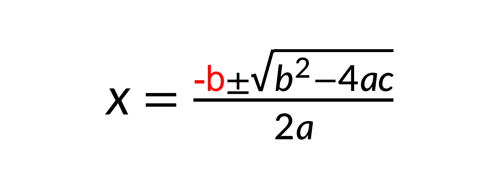
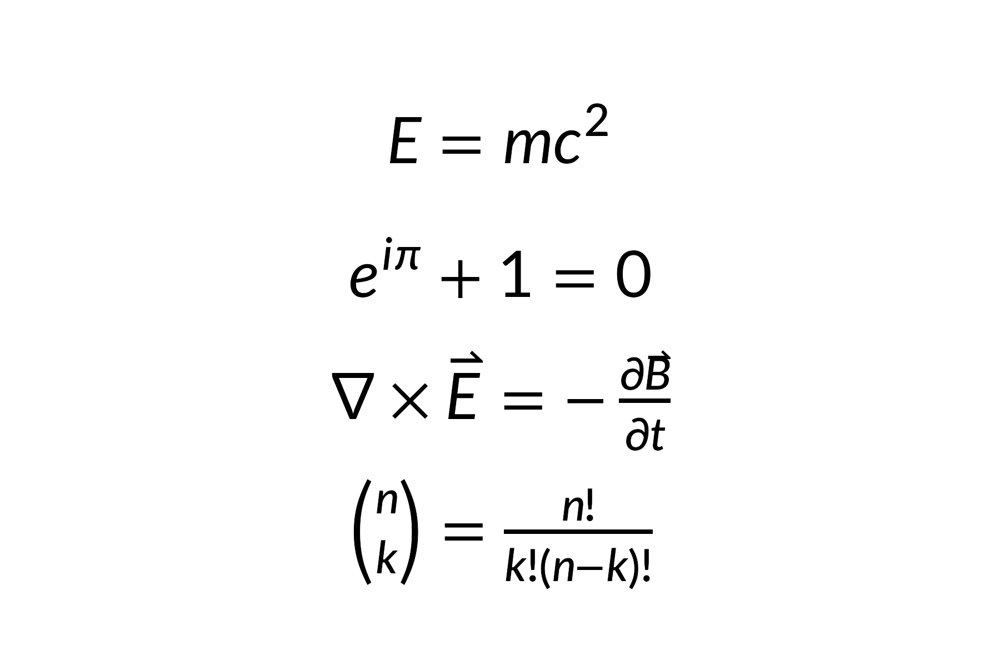
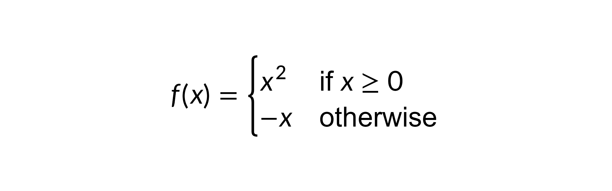
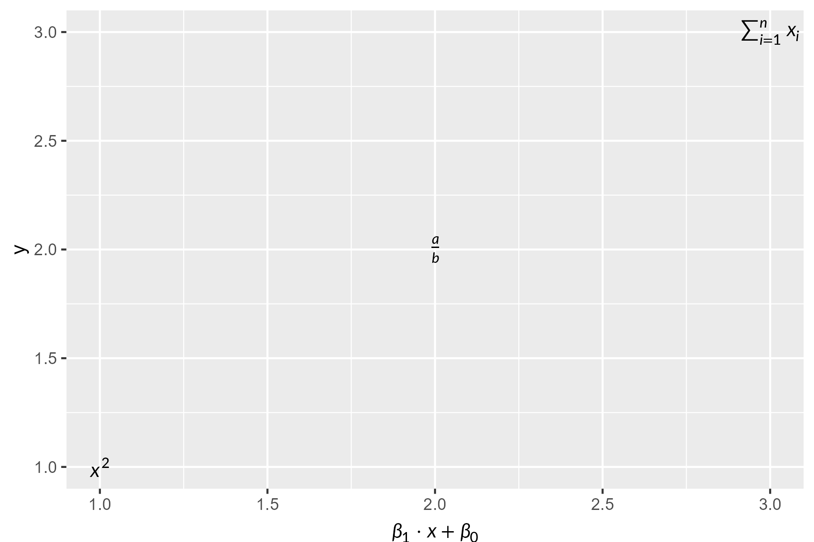

Render LaTeX math expressions as native R grid graphics objects, with no external LaTeX installation required.
gridmicrotex embeds the MicroTeX C++ layout engine to parse LaTeX, compute the full box model, and produce resolution-independent vector output (paths, lines, rectangles) that works on any R graphics device.
Disclaimer
A note on development: This package was developed as a proof of concept exploring AI-assisted package creation. The architecture and specification were designed by me, and the core C++ integration (via MicroTeX) was facilitated largely by AI, with my review and oversight of the final output. I’m sharing it because it works and I hope others find it useful. Contributions, bug reports, and improvements from the community are very welcome.
Installation
Install the development version from GitHub:
# install.packages("pak")
pak::pak("adayim/gridmicrotex")Examples
library(gridmicrotex)
library(grid)
grid.newpage()
grid.latex("x = \\frac{\\textcolor{red}{-b} \\pm \\sqrt{b^{2} - 4ac}}{2a}", gp = grid::gpar(fontsize = 30))
Composing with other grobs
The grob can be placed alongside other grid objects:
g <- latex_grob("\\frac{a}{b}", gp = grid::gpar(fontsize = 30))
grid.newpage()
# A blue box behind the formula
grid.rect(
x = 0.5, y = 0.5,
width = grobWidth(g) + unit(10, "bigpts"),
height = grobHeight(g) + unit(10, "bigpts"),
gp = gpar(fill = "#e8f0fe", col = "#4285f4", lwd = 2)
)
# The formula itself
grid.draw(g)Multiple expressions
exprs <- c(
"E = mc^{2}",
"e^{i\\pi} + 1 = 0",
"\\nabla \\times \\vec{E} = -\\frac{\\partial \\vec{B}}{\\partial t}",
"\\binom{n}{k} = \\frac{n!}{k!(n-k)!}"
)
grid.newpage()
for (i in seq_along(exprs)) {
grid.latex(
exprs[i],
x = unit(0.5, "npc"),
y = unit(1 - i / (length(exprs) + 1), "npc"),
gp = grid::gpar(fontsize = 28)
)
}
Mixed text and math
Use \text{} to embed regular text within math expressions:
grid.newpage()
grid.latex(
"f(x) = \\begin{cases} x^2 & \\text{if } x \\geq 0 \\\\ -x & \\text{otherwise} \\end{cases}",
gp = grid::gpar(fontsize = 26)
)
CJK and multilingual text
Non-math text via \text{} supports CJK and other scripts. Font settings from gp (fontfamily, fontface) apply to text only — math rendering always uses the selected math font:
grid.newpage()
grid.latex("\\text{如果 } x > 0 \\text{ 则 } y = x^2",
gp = gpar(fontsize = 24, fontfamily = "sans"))ggplot2 integration
Use geom_latex() to place LaTeX labels at data coordinates, and element_latex() for LaTeX-rendered axis titles:
library(ggplot2)
df <- data.frame(x = 1:3, y = 1:3,
eq = c("x^2", "\\frac{a}{b}", "\\sum_{i=1}^n x_i"))
ggplot(df, aes(x, y, label = eq)) +
geom_latex() +
labs(x = "$\\beta_1 \\cdot x + \\beta_0$") +
theme(axis.title.x = element_latex())
ggplot2 is a soft dependency — the core functions work without it. See vignette("ggplot2-integration") for more examples.
Features
- Full LaTeX math: fractions, roots, integrals, matrices, Greek, accents, extensible delimiters
- Four bundled math fonts: Lete Sans Math (default), TeX Gyre DejaVu Math, Latin Modern Math, STIX Two Math
- Lete Sans & TeX Gyre DejaVu are sans-serif — pair with
gpar(fontfamily = "sans")(the R default) - Latin Modern & STIX Two are serif — pair with
gpar(fontfamily = "serif")
- Lete Sans & TeX Gyre DejaVu are sans-serif — pair with
- Color support:
\textcolor{},\color{} - Font variants:
\mathbb{},\mathcal{},\mathfrak{} - CJK/multilingual text in
\text{} - ggplot2 geom, annotation, and theme element (S7-compatible with ggplot2 >= 4.0)
- Resolution-independent vector output on all R devices
- No external LaTeX installation required
- Project-wide defaults via
latex_options()(math font, fontsize, render mode, line spacing) - User-defined macros (
define_macro()) for reusable notation - LRU layout cache for repeated formulas (
latex_cache_info()/latex_cache_limit()/latex_cache_clear()) - Formula introspection with
latex_tree(); alignment overlay withlatex_grob(..., debug = TRUE)
Comparison
| Approach | LaTeX required? | Device independent? | Vector? | Math coverage |
|---|---|---|---|---|
tikzDevice |
Yes | No | Yes | Full |
xdvir |
Yes | No | Yes | Full |
latexpdf |
Yes | No | Yes | Full (tables) |
latex2exp |
No | Yes | Yes | Limited |
plotmath |
No | Yes | Yes | Limited |
| gridmicrotex | No | Yes | Yes | Broad |
How it works
- Your LaTeX string is parsed by MicroTeX’s C++ engine into a TeX box model
- A custom
Graphics2Drecorder captures every draw operation (glyph paths, lines, rectangles) with exact coordinates - The layout crosses the C++/R boundary as a data frame
- R converts each record into native grid primitives (
pathGrob,segmentsGrob,rectGrob) - The result is a
gTreethat renders on any device at any resolution
By default, math glyphs are rendered in typeface mode as native text using the selected math font, which keeps PDF/SVG output selectable and searchable on devices with font embedding support.
When render_mode = "path" is used (or when automatic fallback is triggered on unsupported devices), glyphs are drawn as filled vector paths for consistent rendering everywhere.
Make sure to use ragg::agg_png(), svglite::svglite() or grDevices::cairo_pdf() for best results, as some older devices may not support the full range of path operations.
Graphics backend
The default graphics device on Windows (windows()) and macOS (quartz()) may not find the bundled math fonts, producing warnings like:
To avoid this, switch to a modern graphics backend that uses systemfonts for font resolution:
# For knitr / R Markdown — add to your setup chunk:
knitr::opts_chunk$set(dev = "ragg_png")
# For interactive use:
options(device = function(...) ragg::agg_png(tempfile(fileext = ".png"), ...))Recommended backends:
| Backend | Format | Package |
|---|---|---|
ragg::agg_png() |
PNG | ragg |
svglite::svglite() |
SVG | svglite |
grDevices::cairo_pdf() |
Base R (Cairo build) |
Alternatively, use render_mode = "path" to bypass font lookup entirely — glyphs are drawn as vector paths, which works on all devices but produces non-selectable text in PDF/SVG.